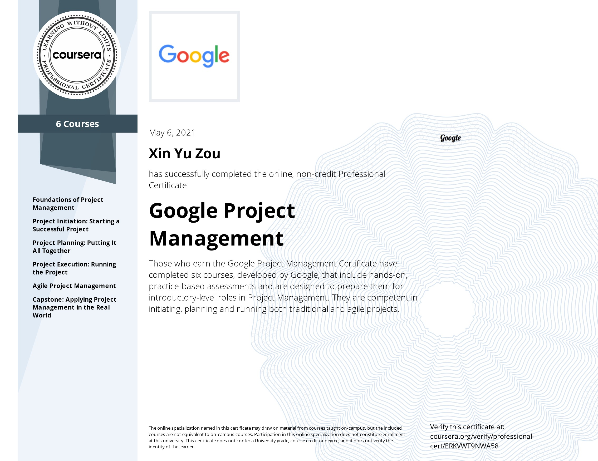
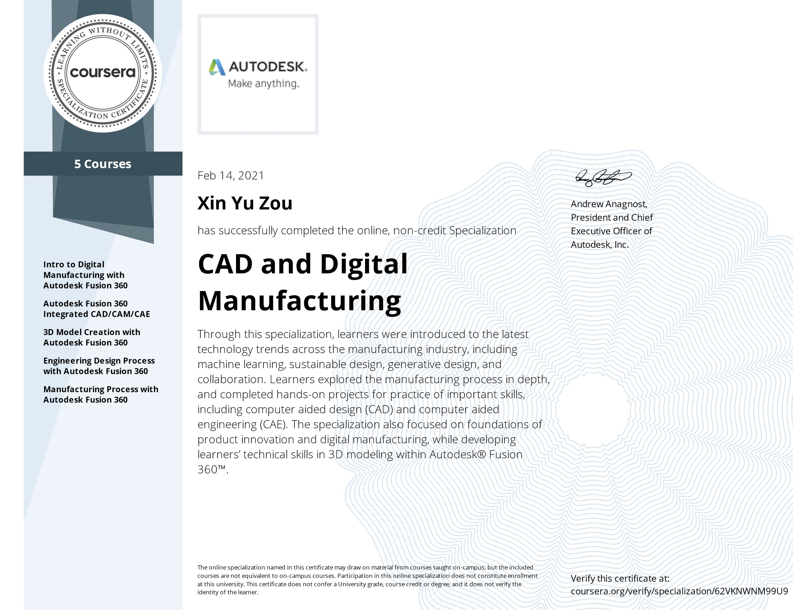
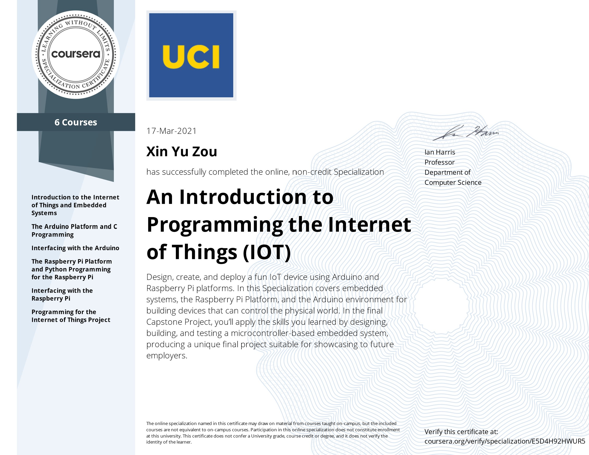

Work Experiences

|
Mechanical Engineer - Electrical Contacts Limited
Sept. 2021 - Dec. 2021 |

|
Online Learning Assistant - Department of Management Sciences at University of
Waterloo
Jan. 2021 - Apr. 2021 |

|
Owner/Tutor - Simon's Piano Studio
Nov. 2016 - Aug. 2020 |
Certifications
 |
 |  |  |
IBM Data Science Professional Certificate - IBM
Google Project Management: Professional Certificate – Google
CAD and Digital Manufacturing Specialization – Autodesk
An Introduction to Programming the Internet of Things (IOT) Specialization – University of California Irvine
CS50x Introduction to Computer Science – Harvard University (Online)
Volunteering
Piano Performer - Oakville Trafalgar Memorial Hospotal - 2016 to 2020Convenience Store Clerk/Lottery Retailer - Oakville Trafalgar Memorial Hospotal - 2018 to 2020
Teacher's Assistant - Halton Catholic School Board - 2016 to 2018
Academic Tutor - Big Brother Big Sister Halton - 2018 to 2019

|

|
xyzou@uwaterloo.ca
|
© 2022 Xin Yu Zou |